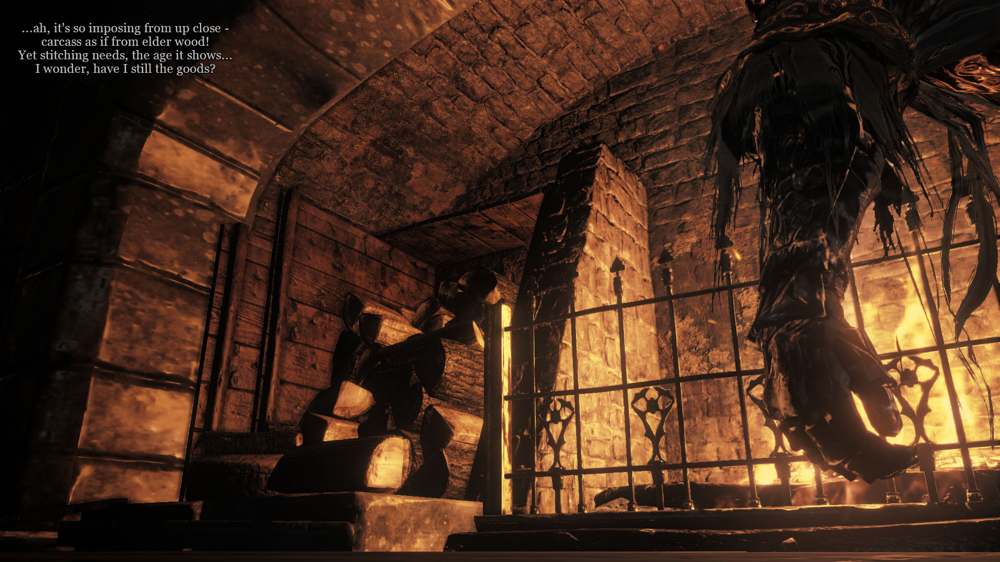
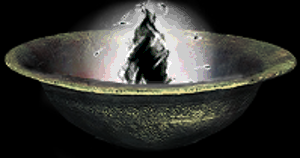
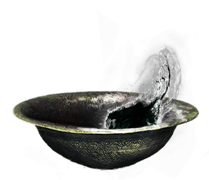
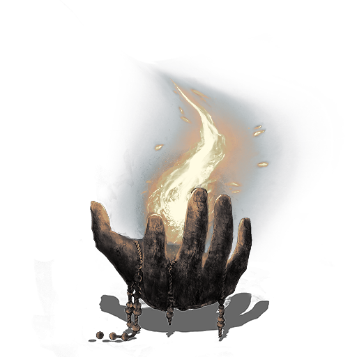

The day after we decoded the Timeline, the Puppeteer has sent us poem #101. As you can already see, the presentation differed a lot from his usual style:
The image shown is the most interesting part, no doubt. As we will see later on, this is the first glimpse we get at Father’s workshop. In-game location is the room where you meet Siegward in Irithyll, but that is hardly related to the Puppeteer’s lore.
The arm on the right side, hanging in front of the fireplace, is encased in Gundyr’s gauntlet. In combination with the result of the recent event, it’s not a far-fetched suggestion that this is a glimpse at the Heart of Spears—that is, at its corpse. One heavy drawback to that idea is that the arm is fairly thick in comparison to Heart of Spear’s morbidly anorexic proportions.
The poem also seems to agree with that proposition. Written from Father’s perspective, the first two lines talk about an “imposing carcass as if from elder wood”. We’ve seen numerous suggestions that Heart of Spears possesses freakish physical resilience, so it can be imagined that its skin would be quite different from a regular corpse.
Latter half of the poem sees the Father in wondering or doubts. “The goods” are ambiguous—is he referring to resources needed to restitch this corpse? Or does he mean his own stitching skills? Either way, the Father still had a job to be done.
#101 was followed by a longer-than-usual period of silence from the Puppeteer. We did not see any events happening for 20 days—up until the end of April. However, several interactions have happened during this time.
The first of them was engaged by Ragg. We have talked about the probability of the Father imbuing Heart of Spears’ corpse with Nameless Flame’s Humanity. During the deaths of both, we have obtained two images—a vessel and a blackflame soul. So—Ragg thought—why not put the one in the other in a very physical sense? And he did exactly that, sending it to the Puppeteer on April 6:
Ten days later, we got a reply in poem #102, sent along with an image:
The image is a more detailed version of the same idea Ragg had, and the poem has confirmed (albeit in a roundabout manner) that Humanity will indeed be put inside the Heart of Spears’ corpse. And, once again, it mentions Sin—the main “foe” of the story from Father’s perspective.
Couple of days later, on April 18, the gears began shifting again. Three people have received three poems in personal messages: Ensign got #103, Alex got #104, and Kallah—#105.
The Puppeteer took care in conveying meaning not only via the words within his poems, but in their formatting as well. Because of this, we can say with a fair bit of certainty that #103 is a continuation of #102—both start with ellipses, both are divided by a blank line in the middle. In this poem Father describes the state of the Heart of Spears’ corpse—heavily scarred from it’s profoundly long life. The last line is interesting—“scrape the stars” suggests that, despite now being devoid of life, an epic fate still awaits the corpse.
#104 switches the perspective from the Father to Oden (his words were always italicized. It also kick-starts the story that will be resolved in the next in-game event—the finale of Oden, Lord of Hail.
It doesn’t take much guessing to see that Oden is distressed by his fate. Ever from the “rebirth” he underwent during his dream, the Lord has been keenly aware of his impending demise (#83, #84). Despite his old age, he is a living being—even in the world of Dark Souls it’s natural to be afraid of perishing.
#105 is a lot more puzzling. A straight continuation from #104, it talks about something staring at Oden. Wildly guessing, this could be Heart of Spears’ corpse. If we assume that after waking up, Oden had spent his time in the Father’s workshop, he would certainly see the carcass. The peculiar part of the poem is the latter half—this something at some point possessed will, wise mind, and “false vision”. All of these could be vaguely related to Heart of Spears: being the first Spear of the Church it was likely a strong-willed warrior, and likely one of a decent mind. The “false vision” however is the most concrete relation we can build. As the first protector of Filianore, Heart of Spears was very likely in favor of the rule of the gods. And Oden was exactly against it, so it would make sense for him to refer to Heart of Spears’ vision as “false”. This is not a concrete theory, but in the same manner as a lot of Dark Souls lore, the Puppeteer has left the details of his story up for interpretation.
Four days later, the next in-game event began. The one that would become the penultimate of the whole story, and the last time we see Oden, Lord of Hail.
Early on during the day, the Puppeteer had sent us #106 in his usual manner. The unrest we saw in #104 was confirmed, as was the impending event. We met it with excitement and anticipation, hungry for some more in-game action.
The Puppeteer did not disappoint. With #107, all PC players were alerted, and the hunt began. In the fashion similar to the final events of Nameless Flame and Heart of Spears, we have been ordered to butcher the puppet, and bring back the “last fruit” of its life.
Under the lead storming skies of the Great Belfry, Oden awaited us. Most of Lord’s tricks remained the same as during his first event. There were, however, a couple of changes. The first difference was a new spell in Lord’s arsenal—an enormous Lightning Stake-like bolt that did no damage, but knocked down everyone around him. The second change—limits for the number of players in Lord’s world were disabled right from the start, which meant that there could be up to 5 invaders fight Oden at the same time.
#108 is yet another peculiar poem from Oden’s point of view. The ancient lord is speaking not to us, nor to the Father, but to some other character—to his “dear friend” who, it seems, died a long time ago. This poem is very isolated from any other lore we have on Oden, which is exactly why it’s puzzling in a way similar to #105.
There were no significant changes in Oden’s behavior throughout the event. As more and more people fought him, he began using his teleportation magic and leaving the glowing white orbs in places he would teleport to. Tikaro had gotten a detailed view on the orbs in the recording below:
Oden directed his attention to the Father in #109. In contrast to the previous poem this one is straight-forward in meaning: despite Father’s simple origin as a human being (which is exactly what a wight is), the elder Lord respects his sharp mind and skillful hands.
As the finale drew nigh, the doubts and fears plaguing Oden have been washed away. In #110 he resolutely orders us to work with the Father ever on, as we are the “last piece that oughtn’t sway”. Unbent, the puppet takes on the last set of invaders, and bids us all farewell. Next time we invade, Oden is stationary and docile. He sits at the highest peak of the Great Belfry, his hat removed, and a glowing soul in his arms.
(Annotation 1: There is a peculiar detail about Oden’s face. He was always referenced as having a “clear eye”. It was interpreted as him being able to understand and see things others did not. But as seen in his death pose, his right eye is quite literally glowing with bright blue. So perhaps the earlier mentions could have had a different meaning?)
(Annotation 2: As you have probably realized yourself by now, Oden’s character draws a lot of inspiration from the Norse god Odin.
Odin is a god of wisdom, war, and poetry, and the chief god of aesir. He is usually depicted as one-eyed, long-bearded and wearing a broad hat. The one-eyed detail is important—Odin willingly sacrificed his eye to drink from Mimir’s well and by doing so obtain great wisdom. Eyes and wisdom draw a parallel to Oden’s “clear eye”, for which he was not forgiven and potentially exiled by the gods.
Moreover, Odin wielded a magical spear Gungnir. If we assume that the “titan Lord of Thunder” who subdued Heart of Spears is Oden, Lord of Hail, then the “accursed spear” stuck through Heart’s ribcage must be Oden’s weapon.)
The Father, observing the resolution of the event, reacts with #111. He is pleased with Oden’s will overcoming his fears. And, which is more important, he now has everything he needs to set the final part of his plan into motion. In his own words—“all pieces caught, left is the cord”. With the Humanity, Heart’s corpse, and now Oden’s Lord Soul, what remains is for craftsman to use these precious resources.
Along with #111, we have obtained the last “item” of the story—Oden’s Lord Soul. Mimicking the pose Oden was sitting in during his “death scene”, the item is depicted not just as a soul like the Humanity, but as an open hand giving us the soul. And, despite it’s bleak color and slightly warped appearance (likely referencing Oden’s extreme age and decay), it still looks like the soul obtained from a Dark Souls boss.
Soon after the end of the event, Jean received #112. It reinforced the fact that Oden is now gone, and nothing remains but the bright Lord Soul. The Father, likely reflecting more on the Puppeteer’s sentiments (as in, the real-life author), comments on being pleased that his work was not in vain.
With all of this said and done, no more puppets remain. The original four puppets are long gone. Nameless Flame broken and harvested for scraps of Humanity. Heart of Spears butchered until nothing but a soulless dead corpse remained. Oden, Lord of Hail gone, offering his soul born uncountable eons ago. The next time we would see the Puppeteer in-game would be during the final event of the whole story.